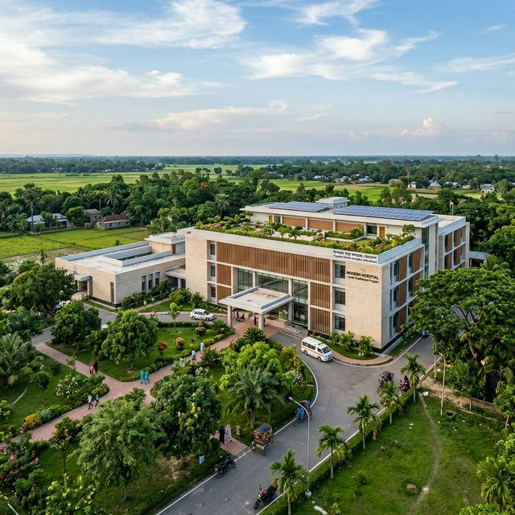
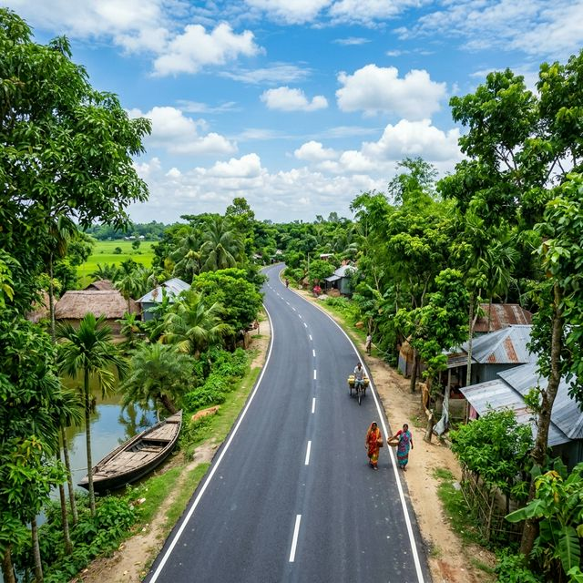
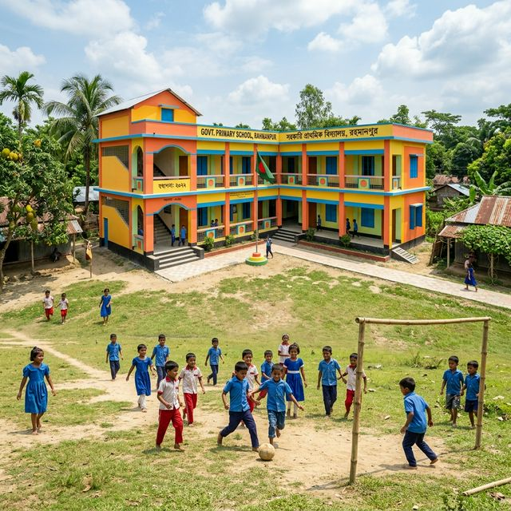

২৪ মার্চ, ২০২৬
তৃণমূল নেতাকর্মীদের সাথে মতবিনিময় সভা
শ্রীপুর উপজেলা বিএনপি কার্যালয়ে স্থানীয় নেতাকর্মীদের সাথে আগামী দিনের কর্মসূচি নিয়ে আলোচনা।
আরও পড়ুন →বাংলাদেশ জাতীয়তাবাদী দলের (বিএনপি) একজন নিবেদিতপ্রাণ নেতা এবং গাজীপুরের মানুষের সেবক।
বিস্তারিত জানুনতিনি একজন বিশিষ্ট চিকিৎসক, যিনি চিকিৎসা সেবার পাশাপাশি জনকল্যাণে নিজেকে নিয়োজিত করেছেন।
গাজীপুরের সাধারণ মানুষের আর্থ-সামালিক উন্নয়ন ও অধিকার আদায়ের সংগ্রামে তিনি সবসময় সোচ্চার।
বিনয়ী ও সাহসী এই নেতা বিএনপি'র কেন্দ্রীয় কমিটির স্বাস্থ্য বিষয়ক সহ-সম্পাদক হিসেবেও দায়িত্ব পালন করছেন।
ত্রয়োদশ জাতীয় সংসদ নির্বাচনে তিনি গাজীপুর-৩ আসন থেকে ১,৬২,৩৪৩ ভোট পেয়ে বিপুল ব্যবধানে জয়লাভ করেন।
দলীয় সমর্থন ও তৃণমূলের আস্থার ভিত্তিতে তিনি গাজীপুর-৩ আসনে বিএনপি'র প্রার্থী হিসেবে মনোনয়নপত্র জমা দেন।
গণতন্ত্র পুনরুদ্ধার এবং জনগণের ন্যায্য অধিকার আদায়ের আন্দোলনে তিনি একাধিকবার হামলা ও মামলার শিকার হয়েছেন। রাজনৈতিক ময়দানে তার এই দৃঢ়তা তাকে একজন সত্যিকারের জননেতায় পরিণত করেছে।
গাজীপুর-৩ আসনের মানুষের জীবনমান উন্নয়নে বাস্তবায়িত কিছু উল্লেখযোগ্য প্রকল্প।

তৃণমূল পর্যায়ে উন্নত স্বাস্থ্যসেবা পৌঁছে দিতে নতুন আধুনিক হাসপাতাল ভবন নির্মাণ।

এলাকার যাতায়াত ব্যবস্থা সহজ করতে নতুন প্রশস্ত রাস্তা ও কালভার্ট নির্মাণ।

শিক্ষার মান উন্নয়নে সরকারি প্রাথমিক ও উচ্চ বিদ্যালয়গুলোর নতুন ভবন এবং আধুনিক ক্লাসরুম।
ড. রফিকুল ইসলাম বাচ্চুর গুরুত্বপূর্ণ বক্তব্য এবং জনসভার ভিডিওগুলো দেখুন।
গাজীপুরের বিশাল জনসভায় সাধারণ মানুষের অধিকার নিয়ে বক্তব্য।
নতুন হাসপাতাল প্রকল্পের ভিত্তিপ্রস্তর স্থাপন কালীন বক্তব্য।
ড. রফিকুল ইসলাম বাচ্চুর সাম্প্রতিক রাজনৈতিক ও সামাজিক কর্মকাণ্ডের আপডেটসমূহ।
শ্রীপুর উপজেলা বিএনপি কার্যালয়ে স্থানীয় নেতাকর্মীদের সাথে আগামী দিনের কর্মসূচি নিয়ে আলোচনা।
আরও পড়ুন →কালিয়াকৈর এলাকার বন্যায় ক্ষতিগ্রস্ত পরিবারের মাঝে ব্যক্তিগত উদ্যোগে খাদ্য সামগ্রী বিতরণ।
আরও পড়ুন →নয়াপল্টনে বিএনপি'র কেন্দ্রীয় স্বাস্থ্য বিষয়ক উপ-কমিটির বিশেষ বৈঠকে অংশগ্রহণ।
আরও পড়ুন →গাজীপুর-৩ আসনের উন্নিয়ন এবং আপনার যেকোনো সাহায্য বা পরামর্শের জন্য আমরা প্রস্তুত।